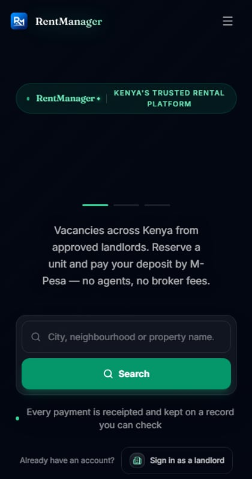

RentManager
A rental-management SaaS platform for the Kenyan market, built around M-Pesa payments and Kenyan tax compliance.
Everything described on this page is readable in the source: rentmanager-backend, rentmanager-frontend and rentmanager-mobile are all public. If a claim here looks generous, go and check it.
What this is
RentManager is software for landlords and property managers in Kenya to run their rental business: list properties and units, manage leases, collect rent by M-Pesa, see a running ledger of every payment, and compute the monthly rental income tax those payments create an obligation for, behind a gate that stays shut until a human confirms it applies. Tenants get their own portal to pay rent, see their lease, raise maintenance requests, and message their landlord.
It's deployed and running. You can open it right now at rentmanager-ke.netlify.app ↗. The web app is on Netlify, the Spring Boot API on Render, and PostgreSQL on Neon, with a scheduled ping keeping the free-tier container awake so M-Pesa callbacks and the outbox sweeps never arrive at a sleeping service.
I want to be equally precise about what that does and doesn't mean. Deployed is not the same as battle-tested: it is live and usable, but it has not yet run a full month of real landlords' rent through it, and Clerk is still serving it from a development instance rather than a production one, which is a step I have not taken. I've been explicit with myself, in the project's own documentation, about which parts have been audited and which haven't. That documentation is part of what this case study is about. If you're evaluating me, the honest claim is that I built and shipped a real system, not that I've run one at scale.
What makes this hard
From the outside a rental platform looks simple. List a unit, collect rent. It stops being simple once all of these have to hold at the same time. A landlord's data has to stay completely separate from every other landlord's. A rent payment has to update a ledger, calculate a platform commission and trigger a payout, atomically enough that a crash halfway through can't lose money or pay it twice. The same M-Pesa STK push must not fire twice because a tenant tapped "pay" twice. And the tax obligation a landlord incurs the moment rent lands carries real legal weight. That figure isn't for display. It feeds a government filing.
RentManager treats each of those as a constraint to engineer around instead of an edge case to handle later. The sections below show how. Tenant isolation sits at two layers instead of one. The rent ledger can be reversed but never edited. STK push idempotency uses an explicit time window. The tax module fails closed until a human turns each gate on.
What I built
I designed and built RentManager end to end, solo:
- System architecture: the modular-monolith boundary, the ports/adapters shape, the decision to keep it that way instead of splitting into services
- Backend: all 21 Spring Boot modules: domain models, application services, persistence, security
- Database design: the schema and all 99 Flyway migrations, in order, none edited after they ran
- Frontend: the Next.js application: the landlord dashboard, the tenant portal, the public listing and reservation flow, the platform-admin console
- Mobile: a 44-screen React Native (Expo) app sharing the same generated API client as the web app, with push notifications, offline detection and secure token storage
- Deployment: containerising the API and getting the whole stack live on free infrastructure: Render, Netlify, Neon, plus scheduled encrypted backups
- Integrations: M-Pesa Daraja (STK push and B2C), Africa's Talking SMS, Clerk authentication
- Testing: the backend's 1,588 tests, the ArchUnit rule covering the property module's layering, and the frontend's Vitest suite
I use AI tools during development, the way most engineers now do. The architecture, the trade-offs and the decisions on this page are mine. I can walk through any of them, and I do, in the project's own decision log.
How a request flows
The one detail worth understanding before anything else: the frontend sends a tenant/organization id on every request, and the backend ignores it completely. Tenant identity comes only from the verified JWT. Anyone can set a header. Nobody can forge a signed token.
Why it's built this way: a header is client-controlled, full stop. Trusting one for tenant scoping means any authenticated user could, in principle, read or write another landlord's data by editing a request. Resolving tenancy from a cryptographically verified claim instead removes that entire class of bug. The cost is one extra lookup per request (cached, short TTL); the alternative was a standing security hole.
"A header is client-controlled, full stop. Trusting one for tenant scoping means any authenticated user could read another landlord's data by editing a request."from 04 / ARCHITECTURE, above
Why a modular monolith, not microservices
The backend is one deployable Spring Boot application, internally split into 21
modules: property, lease,
rentledger, tenant,
deposit, tax,
reservation, notification,
integration, platformadmin
among them, each shaped the same way: api → application →
domain → infrastructure. One ArchUnit test currently holds part of that shape in
place: it fails the build if the property module's application layer depends on its
infrastructure. The other modules keep the same shape by convention, which is weaker,
and extending the rule across all of them is work I still owe the project.
I deliberately did not reach for microservices, a message broker, Kafka or Redis. docker-compose has containers for some of these sitting unused, and the project's own engineering notes are explicit that they should stay that way. A queue and a broker solve a scaling and deployment-independence problem RentManager doesn't have yet. What it needs is clear internal boundaries so the system can be pulled apart later if it ever does need that, and it has them, enforced by a test rather than a diagram.
Real decisions get written down as I make them rather than reconstructed later. Two examples that guard the money paths specifically: ADR-0018 documents why a disbursement reserves its entitlement under a database lock taken in a separate transactional bean, because a self-invoked call would silently skip the lock; ADR-0016 documents why a repeated STK push within a 3-minute window returns the existing pending request instead of sending a second one.
The naming trap, and why it matters
One decision worth explaining because getting it wrong is exactly the kind of bug that
doesn't show up until it's serious: in the database, tenants
is the landlord's organization, meaning the paying customer, and the renter
is a separate table, tenant_profile. So
tenant_id on any row means "which landlord owns this,"
never "which renter." Reading that backwards anywhere in the codebase silently crosses
one landlord's data into another's view.
I wrote that distinction down explicitly in the project's own engineering notes, in bold, at the top, because I'd rather over-document a sharp edge than have it cause a real incident. Every controller method that touches tenant-scoped data is required to carry both an authorization check and a repository-level tenant filter, not one or the other. New landlord organizations aren't auto-provisioned either: a signed-in user with no matching tenant record gets a pending-onboarding role and nothing else, rather than being silently attached to the wrong organization or given a default one.
Authentication and role design
Clerk handles identity on the frontend; the backend independently verifies every
request's JWT against Clerk's JWKS endpoint rather than trusting the frontend's say-so.
Roles are fine-grained on purpose: OWNER,
MANAGER, and STAFF for a
landlord organization, each with different money-moving permissions. Recording a rent
payment is available to staff, since a caretaker collecting cash needs it, but refunds,
adjustments, and changing M-Pesa credentials are owner/manager only. That split maps to
how a real rental business is actually staffed, not to a generic "admin vs. user" model.
Frontend architecture
Next.js 16 (App Router) with React 19 and TypeScript, organized by feature rather than
by file type. A rentledger feature folder holds its own
API client, React Query hooks, components, and types, mirroring the backend module it
talks to. Route-level access control runs in a pure, fail-closed policy function so
"can this persona see this route" is one function you can unit-test, not logic spread
across page components. React Query owns all server state; there's no separate client
cache to keep in sync by hand.
It's a real, working application: landlord dashboard, tenant portal, a public listing and reservation flow with M-Pesa checkout, and a platform-admin console for the business running RentManager itself, and it renders correctly on mobile down to a single-column layout, not just the marketing page.

The same landing page at mobile width.
Schema evolution and the ledger
PostgreSQL, with 99 sequential Flyway migrations as of this writing. Each one applied
once and never edited afterward; a schema change is always a new migration, so the
database's own history stays an honest record of what actually happened, in what order.
Money gets the strictest treatment in the schema: a database trigger makes
rent_transactions append-only, so an update or delete
is rejected at the database itself, not just by application code that a future change
could forget to enforce. Correcting a mistaken transaction posts a linked reversal entry
instead of editing history. Every money table carries a currency column and a CHECK
constraint, and foreign keys were added, table by table, across a dedicated run of
migrations, after an earlier gap in referential integrity was found and closed.
Testing strategy
1,588 backend tests as of the last full run, using real PostgreSQL via Testcontainers rather than mocking the database for anything that touches persistence. A query that works against an in-memory fake and breaks against real Postgres is exactly the bug this catches. One ArchUnit rule runs at build time, so that particular layering violation fails CI the same way a broken test does rather than waiting for a code-review comment someone might miss. The frontend has its own Vitest suite, and I intentionally don't claim "fully tested" anywhere in the project. I say what's covered, and I keep an explicit list of what isn't (the tax and platform-integration modules, and the landlord dashboard UI, are flagged in my own notes as not yet audited, distinct from the renter portal which has had a full pass).
Four decisions that mattered
A scheduled tax rate staged under the wrong legal basis
Problem. a 10% tax rate, effective mid-2026, was seeded into the system as a scheduled replacement for the existing 7.5% resident rental-income tax. Why it was dangerous. researching it properly showed the 10% figure is a real rate, but it belongs to a different regime entirely: a new non-resident landlord tax the same law introduced on the same date. Activating the scheduled row as written would have charged every resident landlord a third more tax than the law actually requires, on a personal tax liability. What I did. deleted the mis-scoped row in a new migration that fails loudly if any environment had already activated it, left the correct 7.5% rate untouched and active, and logged non-resident support as a separate, deliberately unbuilt feature rather than a rate flip. Trade-off. the system computes resident tax only, today, and says so.
Payment aggregation and a licensing constraint I built around, not past
Problem. the obvious way to run a rent-collection platform, where rent lands in one platform-controlled M-Pesa account, a commission is deducted, the rest is paid out, is payment aggregation, and Safaricom's M-Pesa merchant terms prohibit that without their written consent; it also implicates Central Bank of Kenya payment-service-provider licensing. What I did. the compliant path already exists in the code and predates this finding: per-landlord M-Pesa credentials, encrypted at rest, where rent lands directly in the landlord's own till and the platform never takes custody. Trade-off. I documented, in the project's own rules, that the commission/payout code stays behind a flag and does not become the default billing mode until the licensing question is resolved. That's a business decision, not something I get to route around with a config default.
A race condition that could have silently underpaid a landlord
Problem. disbursement math reads a ledger entry's settleable amount and reserves it for payout; if two disbursement attempts for the same entry interleaved, both could read the same unreserved amount and pay out twice, or, depending on ordering, corrupt the reserved-amount bookkeeping so a landlord's payout came up short. What I did. the entitlement reservation now happens under a pessimistic database lock taken before the settleable amount is read, in a separate transactional service. Self-invoking the locked method from the same class would bypass Spring's proxy and silently take neither the lock nor the transaction. A regression test asserts the lock is acquired before the read, not after. Trade-off. the Daraja network call has to stay outside that locked transaction, or a slow payment-provider response would hold the lock open far longer than it should be held.
One active commission policy per landlord, enforced by the database
Problem. commission rate lookups assumed exactly one active policy per landlord, but nothing stopped two from existing at once. When it happened, the lookup threw, and it threw inside the M-Pesa callback, after the ledger had already been credited and before the disbursement was created. Rent was recorded; the landlord wasn't paid, and the failure was invisible until someone went looking. What I did. added a unique partial index at the database level so a second active policy for the same landlord can't be created, not just a check in application code that a future code path could skip. Trade-off. it's a stricter constraint than the original design assumed, which is exactly why it needed to be enforced where application logic can't quietly work around it.
What I'd improve next
In the order I'd tackle them:
| Priority | Item |
|---|---|
| High | Get a tax advisor to sign off on the tax module before any filing gate is switched on. The engineering is fail-closed by design, but a lawyer should be the one to open it, not an engineer. |
| High | Resolve the payment-aggregation licensing question and either obtain the CBK/Safaricom approvals or switch the default billing mode to per-landlord credentials. |
| High | Automated-payout path currently writes its record after sending money and applies no entitlement cap. The manual payout path does both correctly, so the automated one needs bringing up to that standard. |
| Medium | Audit the tax, platform-integration, and landlord-dashboard-UI code paths, which haven't had the same review pass the renter portal and core ledger have had. |
| Medium | Build a real WhatsApp sender (Meta Cloud API). The announcements system is fully built and tested against a stub, but nothing sends yet. |
| Medium | Move provider credentials (SMS, email, Cloudinary) out of environment variables and into the encrypted, database-backed integrations console that already exists for M-Pesa. |
| Medium | Nightly encrypted backups now run on a schedule and are kept for 90 days, but I have never done a full restore drill and there is still no staging environment. A backup you have not restored from is a hypothesis, not a backup. |
| High | Photo upload fails in production. The three Cloudinary keys were never set on the host, so the storage client has no provider and every upload returns a 500 that reads like a bug in the upload code. Found by uploading an image to a live listing and following the failure back. The keys are now declared; they still need values. |
| High | Writes submitted while the free-tier container is cold are lost silently. Creating two units during a spin-up produced no error and no rows. A form that cannot reach the server should say so and retry rather than appear to succeed. |
| Medium | Deep links to a property render "Property not found". The detail fetch fires before tenant context resolves on a hard navigation, and a 404 is shown instead of a retry. Clicking through from the list works, which is what hid it. |